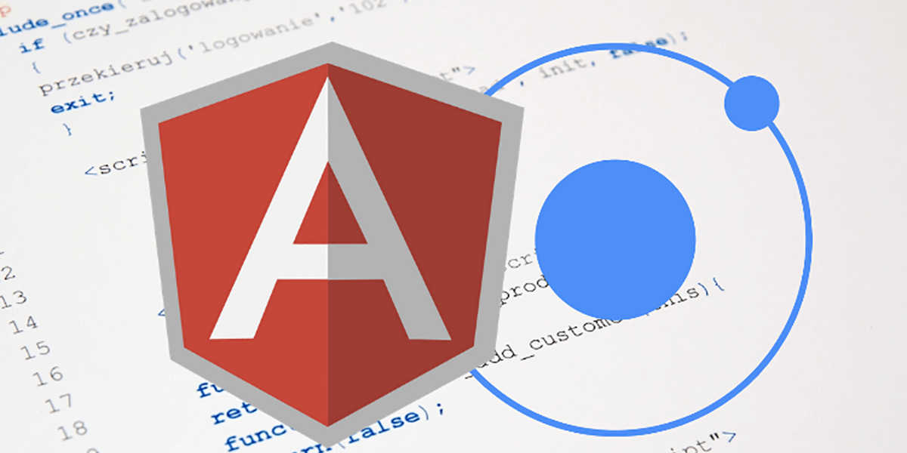

Ionic
01 de Febrero de 2021
Qué es IONIC?
Ionic Framework se centra en la interacción de interfaz de usuario y experiencia de usuario de una aplicación:
Ionic está diseñado para funcionar y mostrarse a la perfección en todos los dispositivos y plataformas móviles actuales. Con componentes listos para usar, tipografía y un tema base magnífico (pero extensible) que se adapta a cada plataforma, estará construyendo con estilo.
IONIC- Multiplataforma
IONIC- Basado en estándares web
IONIC- Compatibilidad
IONIC- JavaScript
IONIC- Angular

IONIC- Vue
IONIC- React
Cree su primera aplicación
Instale Ionic CLI con npm:
Iniciar una aplicación
Comience con el ionic start comando:
Aquí myApp está el nombre del proyecto, tabs la plantilla de inicio y el tipo de proyecto angular.
tabs no es la única plantilla de proyecto disponible. Entre todos los tipos de proyectos, hay tres plantillas disponibles: